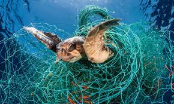

Threats to turtles in Sri Lanka
Fisheries bycatch
It’s estimated that the fishing industry contributes to the death of thousands to tens of thousands of sea turtles each year. Turtles that become trapped in longlines, gill nets and trawls are thrown away as bycatch. And those that manage to avoid fishing nets are impacted by the disruption to their food supply and habitat.
To prevent this this threat, we can minimize fishery impacts:
The seafood that you choose to eat can have a positive or negative impact on sea turtles and other marine life. Smart seafood choices are good for everyone: sea turtles, oceans, fishermen, and the communities they serve.
Coastal Development

Every year, sea turtle habitats are destroyed because of shrinking coastlines. Wherever there is boat vessel traffic, whenever a new hotel or high-rise is built up along the shore, and wherever there is sea floor dredging and beach erosion sea turtle food supplies and nesting areas take a major hit.
Coastlines are special places that we share with many species, including sea turtles.
By making better choices about how we use these areas, we can help ensure that they remain vibrant and healthy for generations to come.
Pollution and Pathogens

Marine pollution can harm sea turtles in many ways. Plastic pollution, discarded fishing gear, petroleum by-products, and other debris injure sea turtles through ingestion and entanglement. Ocean pollution can also weaken the turtles’ immune systems, and disrupt nesting behavior and hatchling orientation.Pollution affects sea turtles in many ways, both directly and indirectly.
Take stock of the goods that you use and decide what you can substitute for more environmentally friendly products, and what you can do without altogether.
Reduce, Reuse, and Recycle remain the consummate pollution-mitigating rules to live by. The less you consume single-use products and the more effectively you use items you already have, the better. Switch from disposable plastic bags to reusable cloth bags and from disposable plastic bottles to reusable metal or plastic bottles.